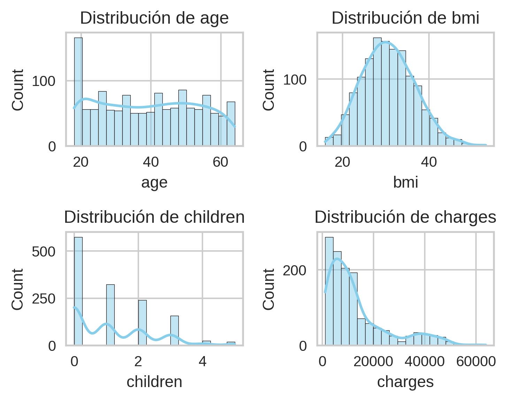
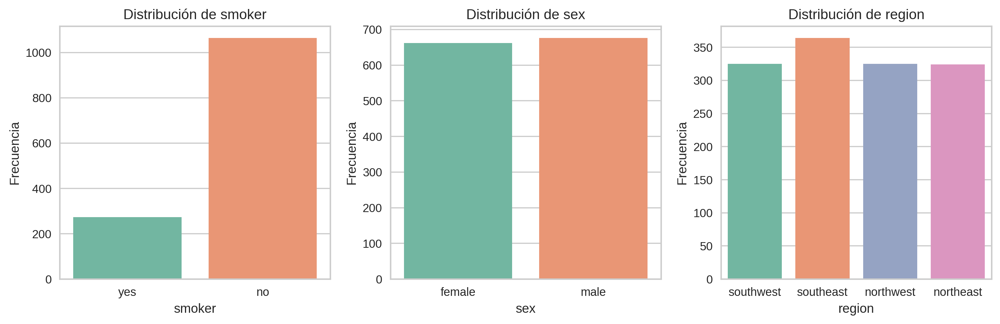
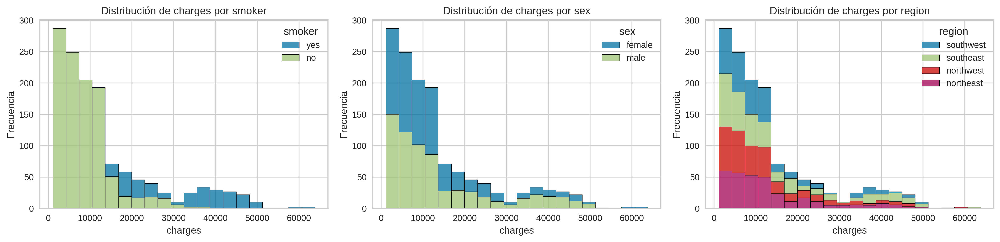
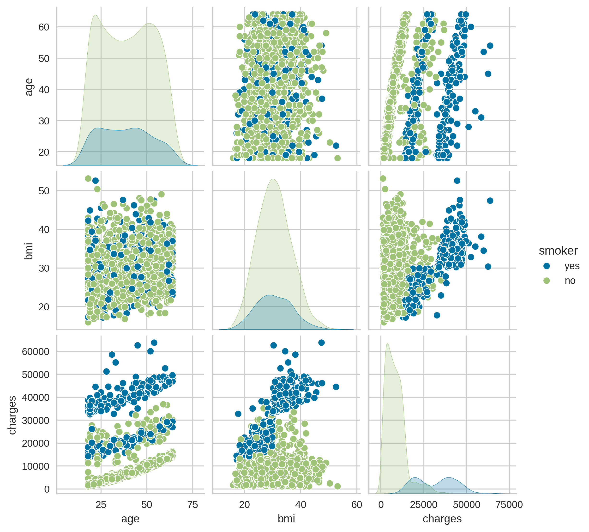
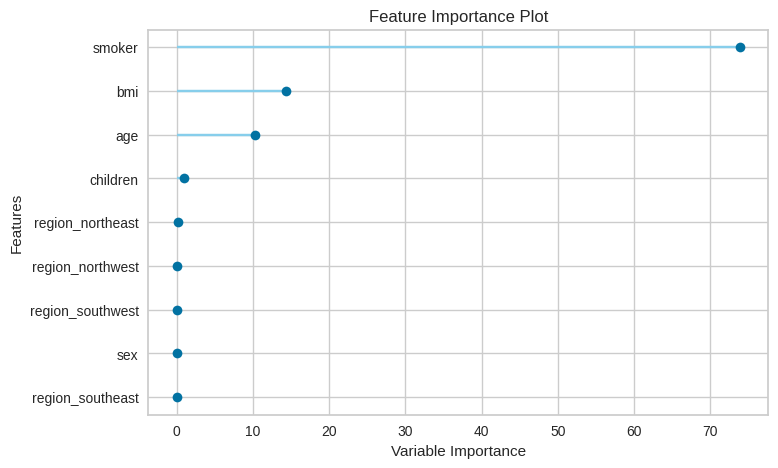
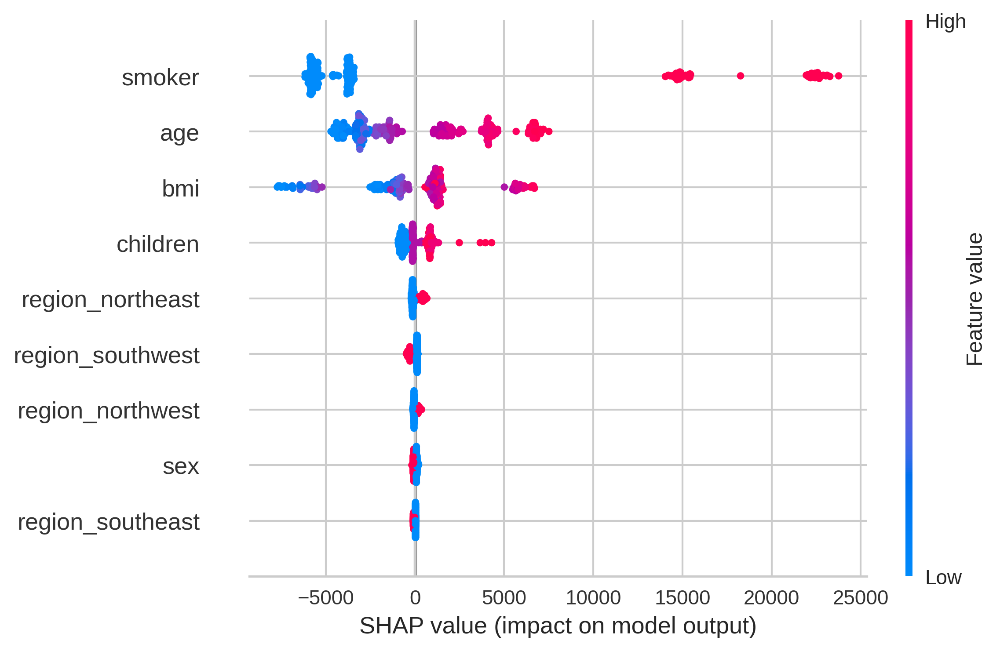
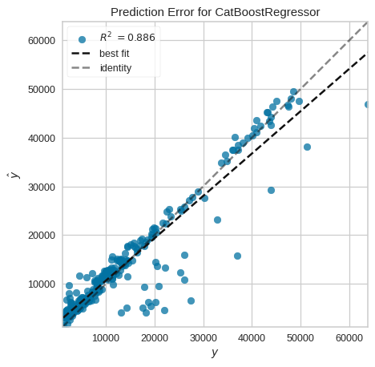

Analisis del dataset de insurance
El dataset de insurance es un conjunto de datos clásico utilizado para modelar costos médicos en función de características demográficas y de estilo de vida. Contiene información sobre asegurados y el monto de sus gastos médicos, lo que lo hace ideal para practicar modelos de regresión.
Cargar el dataset
import matplotlib.pyplot as plt
import matplotlib as mpl
import seaborn as sns
from pycaret.datasets import get_data
from pycaret.regression import *
import os, contextlibdata = get_data('insurance')| age | sex | bmi | children | smoker | region | charges | |
|---|---|---|---|---|---|---|---|
| 0 | 19 | female | 27.900 | 0 | yes | southwest | 16884.92400 |
| 1 | 18 | male | 33.770 | 1 | no | southeast | 1725.55230 |
| 2 | 28 | male | 33.000 | 3 | no | southeast | 4449.46200 |
| 3 | 33 | male | 22.705 | 0 | no | northwest | 21984.47061 |
| 4 | 32 | male | 28.880 | 0 | no | northwest | 3866.85520 |
age: Edad del asegurado (numérica).
sex: Género del asegurado (male, female).
bmi: Índice de masa corporal (numérica).
children: Número de hijos/dependientes cubiertos por el seguro.
smoker: Si el asegurado fuma (yes, no).
region: Región geográfica en EE. UU. (northeast, northwest, southeast, southwest).
charges: Costos médicos individuales facturados por el seguro (variable objetivo).
Análisis Exploratorio de Datos
data.info()<class 'pandas.core.frame.DataFrame'>
RangeIndex: 1338 entries, 0 to 1337
Data columns (total 7 columns):
# Column Non-Null Count Dtype
--- ------ -------------- -----
0 age 1338 non-null int64
1 sex 1338 non-null object
2 bmi 1338 non-null float64
3 children 1338 non-null int64
4 smoker 1338 non-null object
5 region 1338 non-null object
6 charges 1338 non-null float64
dtypes: float64(2), int64(2), object(3)
memory usage: 73.3+ KBSon 1337 observaciones y 7 variables
data.isna().sum()age 0
sex 0
bmi 0
children 0
smoker 0
region 0
charges 0
dtype: int64No hay valores Faltantes
numeric = ['age', 'bmi', 'children', 'charges']
plt.figure(figsize=(5,4))
for i, col in enumerate(numeric, 1):
plt.subplot(2, 2, i)
sns.histplot(data[col], bins=20, kde=True, color='skyblue')
plt.title(f'Distribución de {col}')
plt.tight_layout();
Histograma de las 4 variable numericas
categorical = ['smoker', 'sex', 'region']
fig, axes = plt.subplots(1, 3, figsize=(12,4))
for ax, col in zip(axes, categorical):
sns.countplot(x=col, data=data, ax=ax, palette='Set2')
ax.set_title(f'Distribución de {col}')
ax.set_xlabel(col)
ax.set_ylabel('Frecuencia')
plt.tight_layout();
Distribución de las 3 variables categoricas
fig, axes = plt.subplots(1, 3, figsize=(16,4))
for ax, col in zip(axes, categorical):
sns.histplot(data=data, x='charges', hue=col, multiple='stack', ax=ax, bins=20)
ax.set_title(f'Distribución de charges por {col}')
ax.set_xlabel('charges')
ax.set_ylabel('Frecuencia')
plt.tight_layout();
Distribución de charges para cada variable categorica
cols = ['age', 'bmi', 'charges', 'smoker']
sns.pairplot(data[cols], hue='smoker');
Modelado
Se usara el 80% del dataset para entrenar al modelo, tambien se normalizara y escalado de los datos.
with contextlib.redirect_stdout(open(os.devnull, 'w')):
reg = setup(
data=data, target='charges', train_size=0.8, session_id=7402,
numeric_features=numeric[:-1], categorical_features=categorical,
feature_selection=True, transformation=True, normalize=True, use_gpu=True )| Description | Value | |
|---|---|---|
| 0 | Session id | 7402 |
| 1 | Target | charges |
| 2 | Target type | Regression |
| 3 | Original data shape | (1338, 7) |
| 4 | Transformed data shape | (1338, 10) |
| 5 | Transformed train set shape | (1070, 10) |
| 6 | Transformed test set shape | (268, 10) |
| 7 | Numeric features | 3 |
| 8 | Categorical features | 3 |
| 9 | Preprocess | True |
| 10 | Imputation type | simple |
| 11 | Numeric imputation | mean |
| 12 | Categorical imputation | mode |
| 13 | Maximum one-hot encoding | 25 |
| 14 | Encoding method | None |
| 15 | Transformation | True |
| 16 | Transformation method | yeo-johnson |
| 17 | Normalize | True |
| 18 | Normalize method | zscore |
| 19 | Fold Generator | KFold |
| 20 | Fold Number | 10 |
| 21 | CPU Jobs | -1 |
| 22 | Use GPU | True |
| 23 | Log Experiment | False |
| 24 | Experiment Name | reg-default-name |
| 25 | USI | c41a |
get_config('X_transformed').head()| age | sex | bmi | children | smoker | region_northeast | region_southwest | region_southeast | region_northwest | |
|---|---|---|---|---|---|---|---|---|---|
| 989 | -1.101651 | -1.032297 | -1.773173 | -1.080649 | 2.017694 | 1.747292 | -0.553599 | -0.616964 | -0.566558 |
| 734 | 1.359932 | -1.032297 | 0.282258 | 1.358853 | -0.495615 | -0.572314 | 1.806363 | -0.616964 | -0.566558 |
| 790 | 0.038240 | -1.032297 | 1.692765 | -1.080649 | -0.495615 | -0.572314 | -0.553599 | 1.620839 | -0.566558 |
| 1025 | -1.353821 | -1.032297 | 0.666971 | -1.080649 | -0.495615 | -0.572314 | 1.806363 | -0.616964 | -0.566558 |
| 1209 | 1.359932 | 0.968713 | 1.036003 | 0.290510 | -0.495615 | -0.572314 | 1.806363 | -0.616964 | -0.566558 |
Es la salida de lso datos transformados, escalarlo y centrado
Comparación de los Modelos, de forma descendente para elegir el RMSE mas inferior
best = compare_models(sort='RMSE')| Model | MAE | MSE | RMSE | R2 | RMSLE | MAPE | TT (Sec) | |
|---|---|---|---|---|---|---|---|---|
| catboost | CatBoost Regressor | 2544.1294 | 21513021.5018 | 4615.4353 | 0.8447 | 0.4245 | 0.2967 | 2.7520 |
| gbr | Gradient Boosting Regressor | 2653.5705 | 22788369.3808 | 4750.3269 | 0.8355 | 0.4412 | 0.3166 | 0.1200 |
| rf | Random Forest Regressor | 2843.6511 | 25287914.2960 | 5004.8833 | 0.8187 | 0.4733 | 0.3391 | 0.1480 |
| lightgbm | Light Gradient Boosting Machine | 2973.0959 | 25561696.4936 | 5026.2688 | 0.8162 | 0.5445 | 0.3709 | 0.6040 |
| et | Extra Trees Regressor | 2756.0313 | 26963644.8414 | 5167.8475 | 0.8046 | 0.4776 | 0.3152 | 0.1150 |
| ada | AdaBoost Regressor | 4171.4930 | 27224245.1707 | 5196.6607 | 0.8045 | 0.6046 | 0.6883 | 0.0610 |
| xgboost | Extreme Gradient Boosting | 3223.8355 | 30431896.0000 | 5494.1843 | 0.7774 | 0.5689 | 0.4211 | 0.1910 |
| knn | K Neighbors Regressor | 3533.1890 | 31952929.8000 | 5631.9931 | 0.7702 | 0.4994 | 0.3839 | 0.0650 |
| llar | Lasso Least Angle Regression | 4264.9301 | 37679182.0798 | 6127.1917 | 0.7279 | 0.6161 | 0.4359 | 0.0530 |
| lasso | Lasso Regression | 4264.9304 | 37679195.3633 | 6127.1927 | 0.7279 | 0.6161 | 0.4359 | 0.0520 |
| ridge | Ridge Regression | 4266.4851 | 37679214.7628 | 6127.2099 | 0.7279 | 0.6258 | 0.4362 | 0.0510 |
| br | Bayesian Ridge | 4268.8960 | 37679375.4023 | 6127.2543 | 0.7279 | 0.6183 | 0.4367 | 0.0510 |
| lar | Least Angle Regression | 4266.5641 | 37701506.2132 | 6129.1207 | 0.7277 | 0.6162 | 0.4358 | 0.0520 |
| lr | Linear Regression | 4290.9364 | 37885922.5276 | 6144.3979 | 0.7266 | 0.5960 | 0.4394 | 0.0520 |
| dt | Decision Tree Regressor | 3086.5743 | 43127202.5907 | 6538.9012 | 0.6896 | 0.5244 | 0.3362 | 0.0530 |
| huber | Huber Regressor | 3513.6603 | 47230838.3332 | 6830.9834 | 0.6504 | 0.5446 | 0.2449 | 0.0540 |
| par | Passive Aggressive Regressor | 3510.5454 | 47708732.9582 | 6866.4346 | 0.6471 | 0.5371 | 0.2431 | 0.0570 |
| en | Elastic Net | 5159.0111 | 49494358.5064 | 7009.0181 | 0.6511 | 0.6176 | 0.6926 | 0.0530 |
| omp | Orthogonal Matching Pursuit | 5622.2865 | 55666429.7377 | 7453.8248 | 0.5968 | 0.7183 | 0.8585 | 0.0520 |
| dummy | Dummy Regressor | 9010.9561 | 144536378.4000 | 11975.2231 | -0.0147 | 0.9891 | 1.4901 | 0.0510 |
El modelo con RMSE mas bajo es el CatBoost Regressor
Selección y creación del mejor model
model = create_model('catboost', fold = 10)| MAE | MSE | RMSE | R2 | RMSLE | MAPE | |
|---|---|---|---|---|---|---|
| Fold | ||||||
| 0 | 2569.1670 | 21829690.2076 | 4672.2254 | 0.8575 | 0.3876 | 0.2685 |
| 1 | 2799.2041 | 27564596.0582 | 5250.1996 | 0.7551 | 0.5254 | 0.4283 |
| 2 | 2650.2712 | 19709606.2226 | 4439.5502 | 0.8703 | 0.4503 | 0.3044 |
| 3 | 2591.6070 | 23262442.9423 | 4823.1155 | 0.8319 | 0.4345 | 0.2703 |
| 4 | 2417.2660 | 17408995.1888 | 4172.4088 | 0.8462 | 0.4306 | 0.2953 |
| 5 | 2265.6284 | 16846224.1121 | 4104.4152 | 0.9088 | 0.3353 | 0.2464 |
| 6 | 2761.8084 | 28961778.5441 | 5381.6149 | 0.8382 | 0.4450 | 0.2782 |
| 7 | 2491.7776 | 17703325.3222 | 4207.5320 | 0.8846 | 0.3861 | 0.3132 |
| 8 | 2219.1897 | 16807135.0494 | 4099.6506 | 0.8333 | 0.3766 | 0.2846 |
| 9 | 2675.3743 | 25036421.3707 | 5003.6408 | 0.8213 | 0.4740 | 0.2781 |
| Mean | 2544.1294 | 21513021.5018 | 4615.4353 | 0.8447 | 0.4245 | 0.2967 |
| Std | 185.9578 | 4315253.4801 | 459.1062 | 0.0393 | 0.0519 | 0.0474 |
Se ajusta los hiperparametros del modelo para obtener un RMSE mas bajo
params = {
'learning_rate': [0.05, 0.08, 0.1],
'depth': [3, 4, 5, 6, 7],
'n_estimators': [100, 200, 300, 400]
}
tuned_model = tune_model(model, optimize = 'RMSE', fold = 5,
custom_grid = params, n_iter = 30)| MAE | MSE | RMSE | R2 | RMSLE | MAPE | |
|---|---|---|---|---|---|---|
| Fold | ||||||
| 0 | 2591.4650 | 21418270.6392 | 4627.9878 | 0.8601 | 0.3847 | 0.2770 |
| 1 | 2756.2860 | 27397616.2146 | 5234.2732 | 0.7566 | 0.5147 | 0.4086 |
| 2 | 2562.3756 | 18580836.8445 | 4310.5495 | 0.8777 | 0.4274 | 0.2874 |
| 3 | 2538.7444 | 22371086.3670 | 4729.8083 | 0.8383 | 0.4215 | 0.2641 |
| 4 | 2395.5188 | 17056626.4051 | 4129.9669 | 0.8493 | 0.4251 | 0.3042 |
| 5 | 2233.5858 | 16654619.6520 | 4081.0072 | 0.9098 | 0.3386 | 0.2565 |
| 6 | 2690.8020 | 27596123.7208 | 5253.2013 | 0.8458 | 0.4358 | 0.2835 |
| 7 | 2438.6125 | 17392787.1402 | 4170.4661 | 0.8866 | 0.3875 | 0.3151 |
| 8 | 2221.5711 | 16475135.2377 | 4058.9574 | 0.8366 | 0.3904 | 0.2986 |
| 9 | 2724.6473 | 25059814.6331 | 5005.9779 | 0.8212 | 0.4701 | 0.2879 |
| Mean | 2515.3608 | 21000291.6854 | 4560.2195 | 0.8482 | 0.4196 | 0.2983 |
| Std | 180.8691 | 4204123.2773 | 452.4261 | 0.0396 | 0.0465 | 0.0404 |
Fitting 10 folds for each of 90 candidates, totalling 900 fitspredictions = predict_model(model)
predictions.head()| Model | MAE | MSE | RMSE | R2 | RMSLE | MAPE | |
|---|---|---|---|---|---|---|---|
| 0 | CatBoost Regressor | 2399.9307 | 17707915.1682 | 4208.0774 | 0.8864 | 0.4312 | 0.3332 |
| age | sex | bmi | children | smoker | region | charges | prediction_label | |
|---|---|---|---|---|---|---|---|---|
| 1004 | 47 | male | 19.190001 | 1 | no | northeast | 8627.541016 | 8749.020960 |
| 763 | 27 | male | 26.030001 | 0 | no | northeast | 3070.808594 | 4355.091508 |
| 544 | 54 | male | 30.209999 | 0 | no | northwest | 10231.500000 | 12464.764204 |
| 256 | 56 | male | 33.630001 | 0 | yes | northwest | 43921.183594 | 44215.140564 |
| 1171 | 43 | female | 26.700001 | 2 | yes | southwest | 22478.599609 | 24826.324915 |
Se realizo utilizo el modelo entrenado en los datos de test, que fue el 20% restante y se obtuvo en RMSE = 4208
plot_model(tuned_model, 'feature')
El gráfico nos muestra las variables más influyentes en promedio, el fumar sobresale del resto
interpret_model(tuned_model)
El gráfico muestra la relación de todas las variables con charges
Rojo a la derecha: Ser fumador aumenta mucho el costo.
Azul a la izquierda: No fumar reduce el costo.
plot_model(model, 'error',scale=0.3)
El gráfico muestra que el modelo explica un 88.6%.